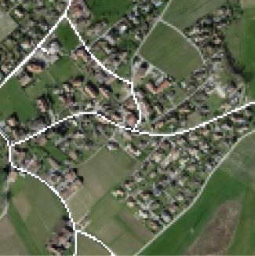

<mat-card class="estimation">
    <mat-card-title i18n>Wie hoch schätzen sie das Risiko?</mat-card-title>
    
    <mat-card-content class="estimation__image">
        <mat-divider class="estimation__divider"></mat-divider>
        <div class="estimation__values">
            <button mat-fab *ngFor="let number of [1,2,3,4,5]">{{number}}</button>
        </div>
        <div class="estimation__result"></div>
        <mat-divider></mat-divider>
    </mat-card-content>
    <mat-card-actions class="estimation__actions">
        <button mat-raised-button i18n class="estimation__actions-next">nächstes Bild</button>
    </mat-card-actions>
</mat-card>